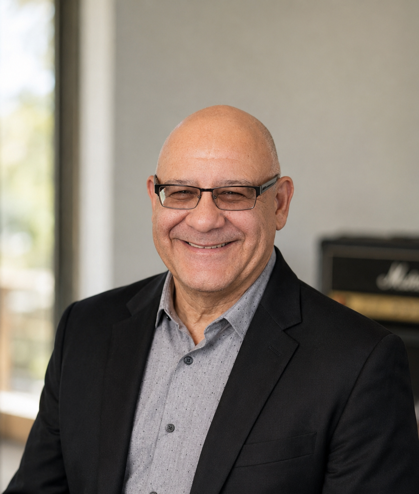
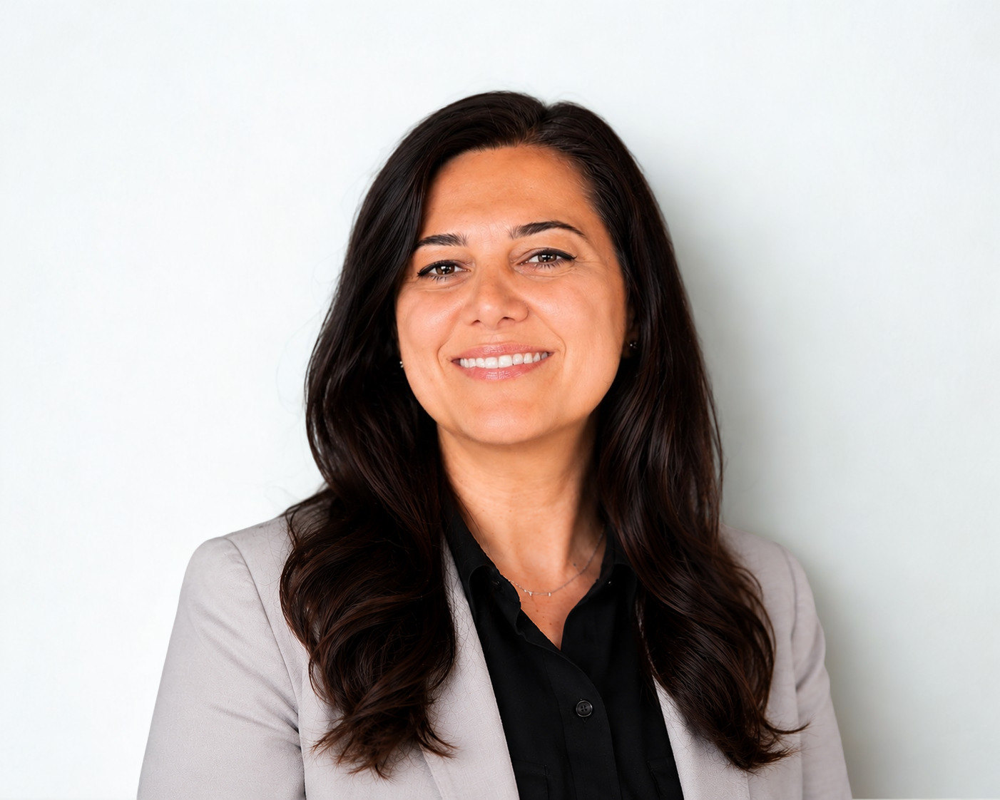

Our Practice
The Artune Collective began as a way to connect our individual work and collaborate where our different experiences and expertise could offer something useful.
At its heart is a shared commitment to learning—especially from perspectives that help us notice something we might otherwise miss, question familiar assumptions, and discover new possibilities.
We see Artune as an evolving practice, open to people and ideas that expand our understanding and bring that learning into meaningful use.

Ara Haroutiounian, M.S.
Ara Haroutiounian is an independent facilitator, consultant, educator, and co-founder of Artune, Inc. His work focuses on leadership development, group dynamics, organizational effectiveness, and mindfulness-based learning. He partners with leaders, teams, educators, and organizations to design and facilitate learning experiences that strengthen collaboration, improve decision-making, and support meaningful growth and change.
Ara brings extensive experience in the study and application of systems psychodynamics through his long-standing involvement with the A.K. Rice Institute for the Study of Social Systems and GREX, where he has served in numerous leadership and staff roles. He directed two Group Relations Conferences at the University of California, Los Angeles, helping create experiential learning environments that explore authority, leadership, identity, and the conscious and unconscious dynamics that shape groups and organizations.
His work bridges practice and education. In addition to consulting and facilitation, Ara served as an Assistant Professor in the Organizational and Leadership Psychology graduate programs at William James College, where he taught and mentored emerging organizational leaders. This commitment to both teaching and practice reflects his belief that meaningful learning happens through the integration of theory, experience, reflection, and application.
Drawing from work across education, healthcare, manufacturing, family businesses, higher education, and the music industry, Ara helps individuals and organizations navigate complexity, uncertainty, and the human dynamics that influence learning, collaboration, and performance.
He is the creator of Group Dynamics for Facilitators.
Ara's approach integrates systems thinking, systems psychodynamics, group relations, experiential learning, mindfulness, and reflective practice. He is passionate about helping people develop a deeper understanding of themselves, others, and the systems they participate in. By making complex ideas accessible and practical, he supports learners in building the awareness and capacity to adapt, lead, and continue learning throughout their lives.

Shakeh Haroutiounian, M.Ed.
Co-Founder, The Artune Collective | Educational Consultant | Professional Development Facilitator
Shakeh Haroutiounian is an educational consultant, instructional leader, and professional development facilitator with more than 25 years of experience helping schools, educators, and organizations create environments where learning, collaboration, and growth thrive.
Her expertise spans curriculum and instructional design, educator professional development, school improvement, accreditation, educational innovation, and organizational leadership. She partners with schools and educational organizations to strengthen instructional practices, develop effective educational systems, and translate research and data into practical strategies that improve student learning. Her work includes instructional coaching, strategic planning, technology and AI integration, leadership development, and helping schools navigate complex challenges and meaningful organizational change.
Shakeh's career began in the classroom, teaching in both the Los Angeles Unified and Burbank Unified School Districts. Her experience as an educator continues to inform her consulting approach, grounding her work in the everyday realities of teaching and learning. Over the years, she has expanded her practice to support educators, school leaders, and organizations through curriculum development, instructional coaching, professional development, and strategic school improvement initiatives. As a Curriculum and Instruction Specialist, she has led schoolwide initiatives involving STEAM education, technology integration, assessment and data analysis, positive discipline, and WASC accreditation. She has also designed and facilitated professional learning experiences that help educators translate new ideas into meaningful classroom practices.
Her leadership experience extends beyond instruction into educational governance, organizational development, and community engagement. Shakeh served on the Board of Directors of St. Gregory Hovsepian School from 2011 to 2015, including three years as Board Chairperson. In this capacity, she helped guide school improvement planning, organizational priorities, and educational decision-making. She also served on the Board of the Glendale Educational Foundation and chaired its School Needs Committee for several years, helping identify and respond to the needs of local schools. More recently, she served as Jefferson Elementary School's Diversity, Equity, Inclusion, and Belonging (DEIB) Bulletin Board Chairperson and received the California PTA Honorary Service Award in recognition of her contributions to the school community.
A distinctive dimension of Shakeh's work is her understanding of the human dynamics that shape learning, leadership, and organizational effectiveness. For more than 25 years, she has participated in Group Relations Conferences, including serving in conference staff roles, developing her expertise in group dynamics, authority, leadership, systems thinking, and organizational behavior. These experiences inform her approach to consulting and facilitation, particularly her ability to recognize how relationships, group processes, and organizational structures influence the success of educational initiatives. She believes that meaningful improvement requires attention not only to curriculum, instruction, and measurable outcomes, but also to the human systems through which change takes place.
Shakeh also brings extensive experience in mindfulness and contemplative practices to her work. She is a Mindful Leader Certified Workplace Mindfulness Facilitator and has completed training in Mindfulness-Based Stress Reduction (MBSR). With decades of personal mindfulness practice and continued study through UCLA's Mindful Awareness Research Center, she regularly facilitates meditation and mindfulness practices for individuals, groups, and organizations. She integrates insights from cognitive science, psychology, mindfulness, and group dynamics to help educators and leaders strengthen self-awareness, navigate challenges, foster psychological safety, and create more thoughtful and collaborative learning environments.
Her commitment to educational innovation is also reflected in her contributions to professional conferences and educator learning. Shakeh presented at Caltech's ECSTEM Conference in 2020 and is scheduled to return as a presenter for the February 27, 2027 conference. Through these opportunities, she contributes to conversations about innovative teaching practices, STEM education, and meaningful student engagement. Throughout her career, she has remained actively involved in professional learning communities and organizations focused on curriculum development, educational leadership, mindfulness, and organizational dynamics.
As Co-Founder of The Artune Collective, Shakeh brings these diverse experiences together to advance a more integrated approach to learning and organizational development. Through educational consulting, professional development, coaching, and facilitation, she helps schools and organizations strengthen their practices, build leadership capacity, and create conditions for sustainable improvement. Her approach combines educational expertise with an understanding of applied human systems, recognizing that lasting change depends on both effective strategies and the capacity of people to work together.
Across her roles as an educator, consultant, leader, facilitator, mindfulness practitioner, and community advocate, Shakeh's work is guided by a central belief: people learn best when they feel safe, connected, challenged, and empowered to contribute. She is passionate about designing experiences that encourage curiosity, strengthen relationships, and help individuals and organizations discover new possibilities for growth.
Shakeh holds a Master of Education in Curriculum and Instruction, a California Multiple Subject Teaching Credential, and undergraduate studies in Psychobiology and Spanish Literature at UCLA.
Outside of her professional work, Shakeh loves traveling, particularly spontaneous road trips that leave room for discovery and adventure. With proficiency in multiple languages, she enjoys exploring language and culture, as well as reading and writing poetry in Spanish. She treasures spending quality time with her son and maintains a lifelong curiosity about cognitive science and space exploration—fields that continually inspire her fascination with learning, human potential, and our place in the universe.